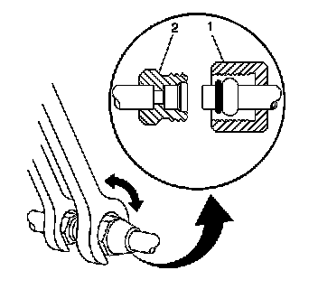
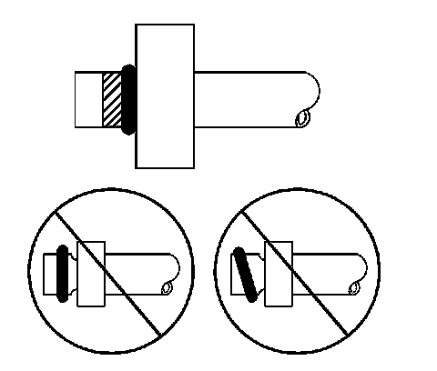

O-Ring Replacement
O-RING REPLACEMENT
REMOVAL PROCEDURE

1. Disassemble the A/C refrigerant components. Refer to the appropriate repair procedure
- For compression style fittings use a back up wrench on the fitting (2) and loosen the fitting nut (1).
- For banjo style fittings remove the bolt retaining the banjo type fitting.
2. Remove the O-ring seal from the A/C refrigerant component.
3. Inspect the O-ring seal for signs of damage to help determine the root cause of the failure.
4. Inspect the A/C refrigerant components for damage or burrs. Repair if necessary.
5. IMPORTANT: Cap or tape the open A/C refrigerant components immediately to prevent system contamination.
Cap or tape the A/C refrigerant components.
6. Discard the O-ring seal.
INSTALLATION PROCEDURE
1. Inspect the new O-ring seal for any sign or cracks, cuts, or damage. Replace if necessary.
2. Remove the cap or tape from the A/C refrigerant components.
3. Using a lint-free clean, dry cloth, carefully clean the sealing surfaces of the A/C refrigerant components.
4. IMPORTANT: DO NOT allow any of the mineral base 525 viscosity refrigerant oil on the new O-ring seal to enter the refrigerant system.
Lightly coat the new O-ring seal with mineral base 525 viscosity refrigerant oil.
5. IMPORTANT: DO NOT reuse O-ring seals.
Carefully slide the new O-ring seal onto the A/C refrigerant component.

6. The O-ring seal must be fully seated.
7. Assemble the A/C components.Refer to the appropriate repair procedure.
- For compression style fittings use a back up wrench on the fitting (2) and tighten the fitting nut (1) to specification.
- For banjo style fittings install the bolt retaining the banjo type fitting and tighten to specification.